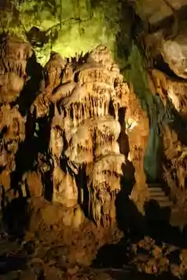

SRBIJA
Resavska pećina se nalazi u istočnoj Srbiji, na području Gornje Resave, 20 km od Despotovca. Smeštena je u krečnjačkom brdu Babina glava na obodu
kraškog polja Divljakovac i na nadmorskoj visini od 485 m. Ubraja se u red najstarijih pećina u našoj zemlji, jer je stara 80 miliona godina, a
stariji nakit se procenjuje na oko 45 miliona godina. Njeno stvaranje je počelo pre velikog ledenog doba hemijskim i mehaničkim radom reke ponornice
u krečnjačkoj geološkoj podlozi.
Resavska pećina je otkrivena 1962. godine, iako su za nju i ranije znali čobani koji su se u pećinu sklanjali sa ovcama da bi se zaštitili od nevremena.
Za posetioce je otvorena 1972. Pećina je duga 4,5 km, detaljno je istraženo 2830 m, a za posetioce je uređeno oko 800 m. Temperatura u Resavskoj pećini
je konstantna tokom cele godine i iznosi +7°C, dok vlažnost vazduha varira od 80 do 100%.
Unutrašnjost pećine obiluje brojnim i raznovrsnim dvoranama, kanalima, galerijama, stubovima, stalaktitima, stalagmitima, draperijama i okamenjenim
vodopadima. Pećinski nakit prisutan je već na samom ulazu, koji se nalazi na 485 m nadmorske visine. Nakit je nastao rastvaranjem kalcijum karbonata,
a boja zavisi od minerala kroz koji je prošla voda. Pojavljuje se u tri boje, crvenoj (od oksida gvožđa), beloj (od kristalnog kalcijuma) i žutoj
(od primesa gline).

Prilikom prolaska kroz pećinu posetioci se kreću spiralnom betonskom stazom, pravac obilaska je u jednom smeru, odnosno povratak nije istom stazom.
Staza prolazi kroz različite dvorane na dva nivoa (gornja i donja galerija). Najniža tačka do koje dolaze posetioci nalazi se na 405 m nadmorske visine.
U gornjoj galeriji obilaze se četiri dvorane. Prva je „Dvorana sraslih stubova ili kolonada“, koja je ime dobila po stubovima koji su srasli od poda do
tavanice, a sastoje se od kalcita žućkaste boje. U drugoj, „Dvorani košnica“, tavanica je prekrivena stalaktitima koji se još uvek formiraju. Drugu i
treću dvoranu spaja kanal crvenih breča koga u našoj zemlji ima samo u Resavskoj pećini. Kanjonski kanal je najsuvlji deo pećine i ne sadrži pećinski
nakit. Po sredini kanala nalazi se ponor „Slepi tunel“, dug 25 m, koji je ispitan, ali nije uređen za razgledanje. Kanjonskim kanalom stiže se do treće
dvorane – „Predvorja istorije“. Ime je dobila po tome što je u njoj nađen alat (kamena sekira, vrhovi kopalja), lobanja polarne lisice i ognjište
praistorijskog čoveka. Kraćim tunelima, koji su naknadno probijeni, dolazi se do „Staze okamenjenih vodopada“, sa „Orguljama“. Dvorana je veoma
akustična, a mogu se videti dva kristalno bela kipa, „Baba“ i „Deda“. Dužim veštačkim tunelom dolazimo do četvrte – „Kristalne dvorane“, u kojoj se
nalazi pećinski nakit poznatiji kao „Obešena ovca“ i „Stopalo slona“. Udubljenje u zidu pećine nastalo spajanjem stalaktita i stalagmite zove se „Zvono“
ili „Kavez“.
Resavska pećina ima status zaštićenog spomenika prirode, uključujući i neposrednu okolinu površine 11 hektara.